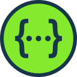
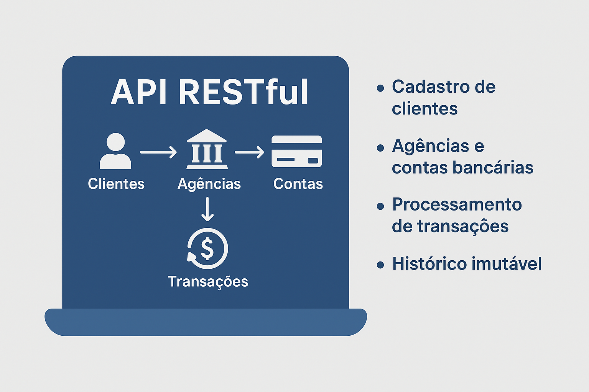
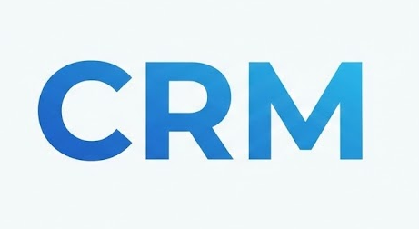
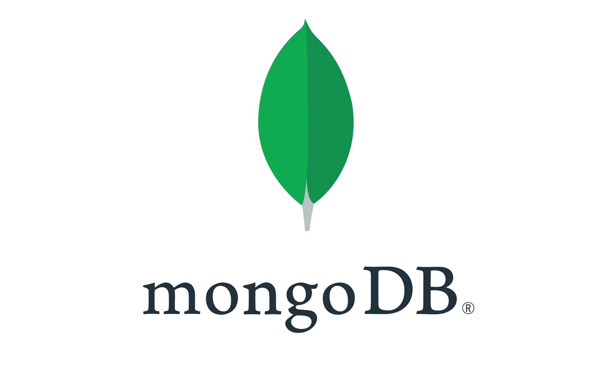
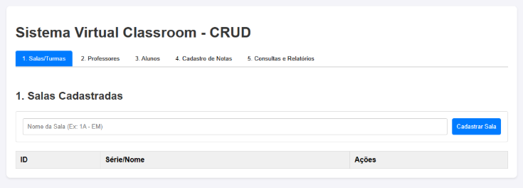
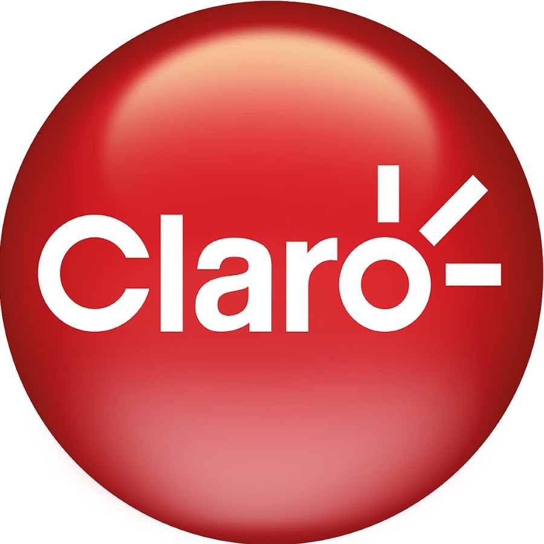
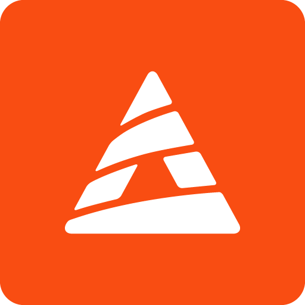

Backend
Principal Java 17+
Java 17+ Spring Boot
Spring Boot- Hibernate
 JUnit 5
JUnit 5
OpenAPI Maven
Maven
- Spring Security
- Spring Data JPA
- Bean Validation
- Mockito
- Lombok
Analista de Sistemas · Desenvolvedor Backend
APIs e sistemas backend em Java e Spring Boot.
Gosto de código organizado, bem testado e fácil de manter. Venho da infraestrutura de TI, então penso no sistema também depois que ele vai para produção.
Sou desenvolvedor Java e trabalho com tecnologia desde 2023.
Comecei no suporte e na infraestrutura de TI. Lá passei a escrever consultas em Oracle SQL, manter interfaces do ERP Sankhya e automatizar processos internos. Foi esse contato diário com sistemas reais que me levou para o desenvolvimento.
Hoje meu foco é backend: APIs REST com Spring Boot, persistência com JPA, testes com JUnit e Mockito e uma boa separação de camadas. Sou bacharel em Ciência da Computação e técnico em Desenvolvimento de Sistemas pelo SENAI.
Desde março de 2026 sou Analista de Sistemas na Start Urbanismo, onde desenvolvo e mantenho aplicações web, integrações via API e Webhooks e melhorias em sistemas legados.
As ferramentas que uso para construir, testar e entregar software.

OpenAPIUma seleção do que construí. O código de todos está no GitHub.

Simula as operações de um banco digital: clientes PF e PJ, agências, contas, depósitos e transferências, com extrato detalhado e imutável.

Gestão de clientes e contatos, construída como referência de arquitetura em camadas com Spring Boot.

Usuários, postagens e comentários modelados em um banco orientado a documentos.

Aplicação full stack para gerenciar pessoas, turmas e notas de um ambiente escolar.
Do suporte ao desenvolvimento: onde trabalhei e o que fiz em cada lugar.
Desenvolvimento e Sustentação de Software

A base acadêmica e os cursos que complementam a prática.

ConcluídoFaculdade Anhanguera · Uberlândia, MG
SENAI · Uberlândia, MG
Aberto a conversas e novas oportunidades em desenvolvimento backend. E-mail e LinkedIn são as formas mais rápidas de falar comigo.